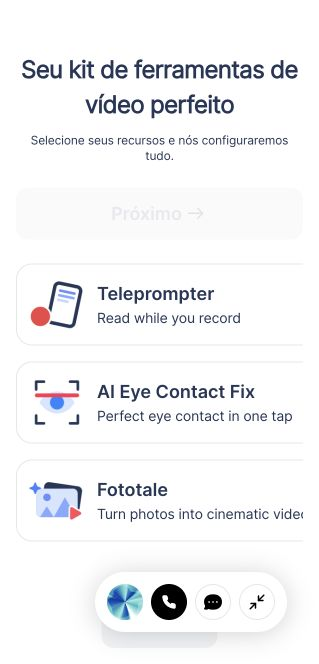
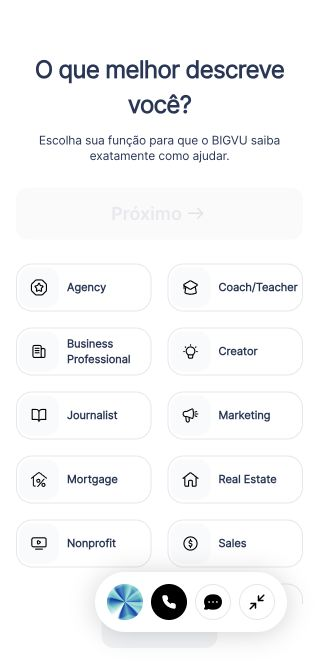
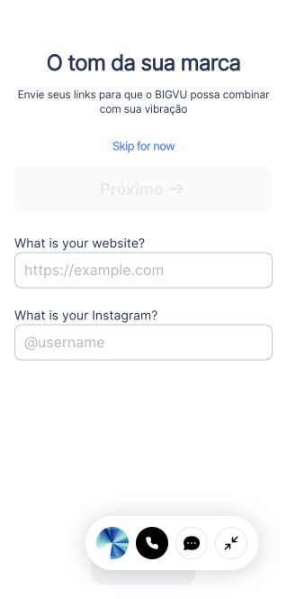
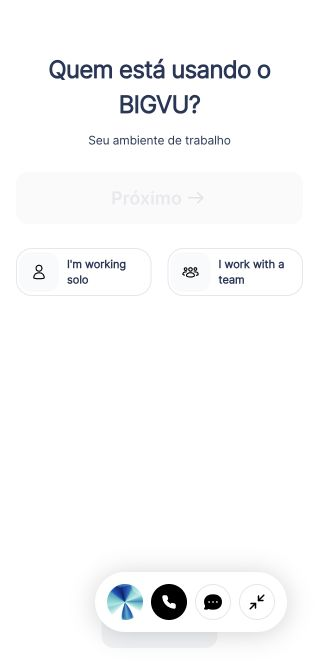
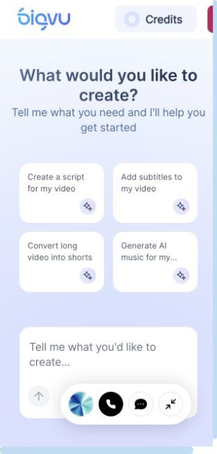
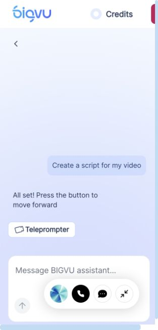
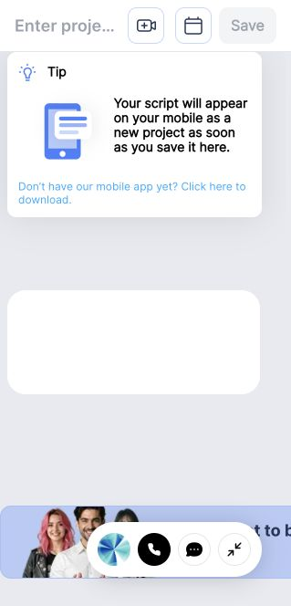
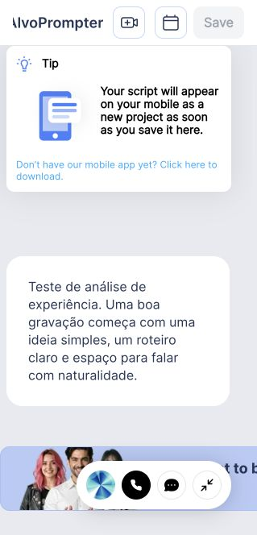
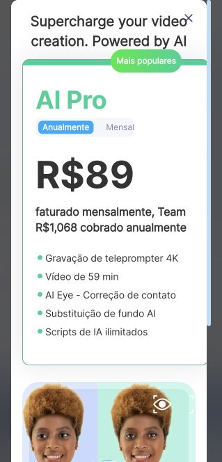

ALVOPROMPTER · REFERÊNCIA DE PRODUTO · 16/10/2026
BIGVU: entrada até o primeiro roteiro
Auditoria parcial do app web autenticado, realizada no navegador integrado, em painel de 319 × 664 px. As imagens abaixo são capturas desta sessão; não representam o aplicativo nativo do iPhone.
Conclusão: a entrada por intenção é uma referência útil. O AlvoPrompter pode se diferenciar chegando ao primeiro resultado mais rápido, com português consistente e controles que não ocupem a área de criação.
O que aplicar ao AlvoPrompter
- Prioridade 1 — primeiro resultado: oferecer escrever, gerar com IA ou importar, com um roteiro de exemplo e caminho claro para ensaiar/gravar.
- Prioridade 1 — continuidade: após gravar, mostrar assistir, refazer, editar e exportar; indicar salvamento e localização do arquivo.
- Prioridade 2 — personalização contextual: perguntar duração, destino e tom durante a criação, com opção de pular; não transformar isso em barreira de entrada.
- Prioridade 2 — descoberta de recursos: descrever o resultado de cada ação; exibir exemplos próprios com pessoas e miniaturas de vídeo quando ajudarem a explicar o recurso.
- Prioridade 3 — marca: cores, logo e estilo reutilizáveis, depois de garantir a qualidade do fluxo principal.
Comparação com o código local: WelcomeFlow já oferece Explorar sem conta; ScriptLibrary já tem roteiro com IA, escrita, importação e retomada. Preservar essas vantagens. Esta leitura de código não equivale a uma nova validação visual ou funcional do AlvoPrompter.
Etapas observadas
1. Canais de publicação
Boa
Pergunta baseada no objetivo do usuário, com ícones e nomes. Foi possível continuar sem selecionar canais. Não conectamos redes sociais.
2. Seleção de ferramentas
Regular

Apresenta benefícios junto dos recursos, mas mistura idiomas. No painel de 319 px, parte dos cartões ficou fora da área visível. Teleprompter foi selecionado para seguir o fluxo analisado.
3. Perfil profissional
Regular

Seleção obrigatória adiciona uma etapa antes de experimentar o produto. Creator foi escolhido conforme resposta do titular.
4. Tom da marca
Boa com ressalvas

Permite pular a coleta de site e Instagram. Essa personalização tem valor potencial, mas a tradução está incompleta e a utilidade não foi validada. Etapa pulada sem enviar links.
5. Uso individual ou equipe
Regular

Escolha clara, porém soma mais uma pergunta de entrada. Seguimos o uso individual, sem adicionar participantes.
6. Oferta inicial
Atrito alto
Oferta de assinatura aparece antes do primeiro projeto. No estado observado, Anualmente estava selecionado, mas havia texto faturado mensalmente e total anual; isso exige clareza maior. Fechada sem iniciar teste ou compra.
7. Início por intenção
Boa estrutura

Quatro tarefas compreensíveis: roteiro, legendas, cortes e música. A barra flutuante de suporte ocupa parte da caixa de entrada na largura observada. Interface principal em inglês.
8. Assistente encaminha à ferramenta
Regular

A escolha de criar roteiro levou a uma resposta com um botão Teleprompter. Não houve roteiro gerado nessa etapa; existe um clique adicional para chegar à ferramenta.
9. Editor vazio
Regular

Dica de sincronização com o celular explica continuidade. O campo vazio não apresentou orientação textual visível. O nome do projeto fica truncado na largura observada.
10. Roteiro demonstrativo
Funcional

Texto demonstrativo e título foram inseridos; o app passou a uma URL de projeto. Projeto: Teste UX — AlvoPrompter. Não foi gravado áudio/vídeo nem publicado conteúdo.
11. Adicionar vídeo
Bloqueado por oferta

Upload take abriu outra oferta de assinatura. Edição, legendas aplicadas, exportação, qualidade de IA e publicação não foram testadas. Não iniciamos assinatura.
Acessibilidade e limites
Na árvore de acessibilidade observada, alguns botões aparecem sem nome, e o campo editável de roteiro aparece como contêiner, sem rótulo de edição claro. São riscos que merecem teste com leitor de tela. Não foram medidos contrastes, testados todos os percursos de teclado nem verificada conformidade WCAG.
O editor exibiu uma área de texto inicialmente vazia, mas aceitou entrada. O console também registrou falhas de configuração remota; não há evidência suficiente para atribuir o estado vazio a elas. Problemas na largura estreita devem ser comparados com a versão web em desktop e com o app nativo antes de generalizar.
Gravação, reprodução real de áudio, legendagem, exportação, assinatura e publicação não foram concluídas. O bloqueio observado ao adicionar vídeo impede julgar a experiência completa. A existência de atalhos ou anúncios de recursos não comprova sua qualidade.
Projeto demonstrativo mantido na conta: Teste UX — AlvoPrompter. Nenhum conteúdo público foi publicado. Nenhuma assinatura foi iniciada.
Abrir o roteiro de teste no BIGVU